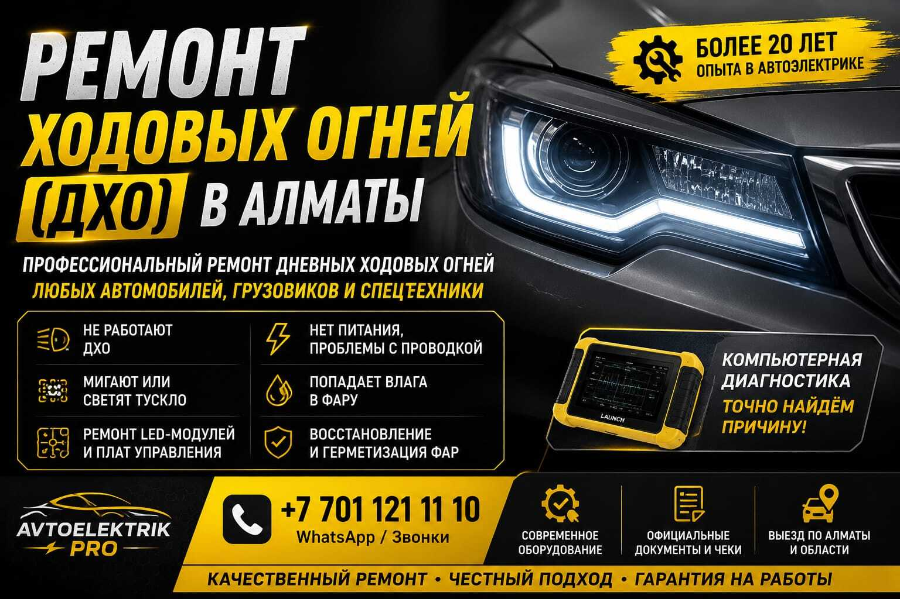
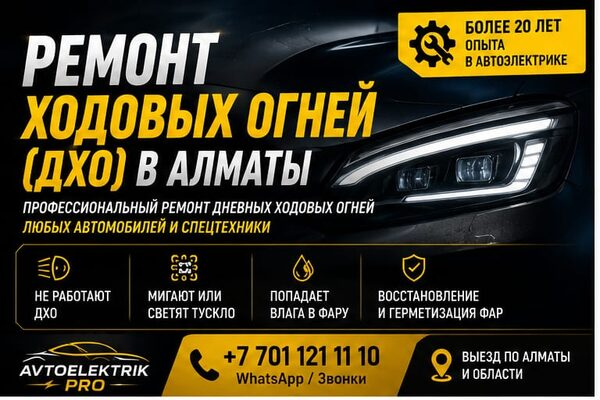
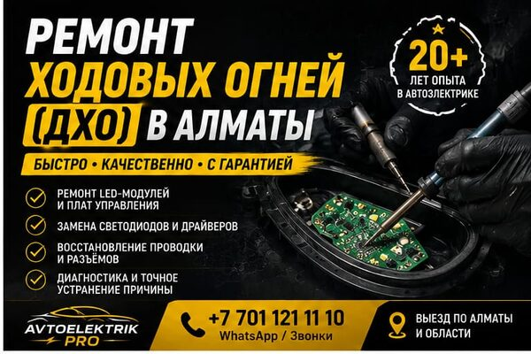

Ремонт ходовых огней (ДХО) в Алматы. Цена ремонта — от 40 000 ₸.

🔧 Проверьте и попробуйте решить сами — приложение «АвтоЭлектрик PRO» →
Опыт и оборудование
Профессионализм и надёжность
Более 26 лет опыта в автоэлектрике. Современное диагностическое оборудование. Ремонт автомобилей любых марок. Официальные документы и чеки для физических и юридических лиц.
Какие неисправности мы устраняем
Ремонтируем все неисправности дневных ходовых огней: от одного неработающего огня до проблем с питанием и ошибками блока управления.
Не работает один ходовой огонь
Возможная неисправность, требующая диагностики и ремонта.
Не работают оба ДХО
Проблема может быть связана с питанием или управлением системой.
Мигают светодиодные ходовые огни
Неисправность может быть вызвана проблемами с драйверами или проводкой.
Диагностика перед ремонтом
Перед ремонтом обязательно проводится комплексная диагностика. Мы проверяем все системы, чтобы точно определить причину неисправности.
Компьютерная диагностика
Проверка электронных блоков и их состояния
Проверка питания и массы
Контроль подачи питания и заземления
Измерение напряжения и нагрузки
Проверка электрических параметров системы
Комплекс работ по ремонту
Наш сервис выполняет полный комплекс работ по ремонту ходовых огней: от замены светодиодов до настройки работы ДХО.

Замена светодиодов
Профессиональная замена светодиодов в ходовых огнях для восстановления их функциональности.

Ремонт LED-модулей
Диагностика и ремонт LED-модулей, включая замену поврежденных компонентов.
Восстановление электронных плат
Диагностика и ремонт электронных плат, включая пайку и замену компонентов.
Какие марки мы обслуживаем
Мы ремонтируем ходовые огни практически любых производителей, в том числе спецтехники, автобусов, строительной и дорожной техники.
Toyota
Один из брендов, для которых мы выполняем ремонт.
Mercedes-Benz
Один из брендов, для которых мы выполняем ремонт.
BMW
Один из брендов, для которых мы выполняем ремонт.
Volkswagen
Один из брендов, для которых мы выполняем ремонт.
Hyundai
Один из брендов, для которых мы выполняем ремонт.
Iveco
Один из брендов, для которых мы выполняем ремонт.
КамАЗ
Один из брендов, для которых мы выполняем ремонт.
ГАЗ
Один из брендов, для которых мы выполняем ремонт.
FAW
Один из брендов, для которых мы выполняем ремонт.
Спецтехника
Мы также ремонтируем ДХО спецтехники.
Автобусы
Ремонтируем ДХО автобусов.
Строительная техника
Ремонтируем ДХО строительной техники.
Наши преимущества
26 лет опыта в ремонте автоэлектроники. Современное оборудование и индивидуальный подход.
Большой опыт
Более 26 лет практического опыта в ремонте автомобильной электроники.
Сложные неисправности
Работаем даже со сложными неисправностями, гарантируя качественный ремонт.
Современное оборудование
Используем современное диагностическое оборудование для точного выявления и устранения проблем.
Стоимость услуг
Цены: диагностика — от 10 000 ₸, поиск неисправности — от 10 000 ₸, ремонт проводки — от 20 000 ₸, ремонт ДХО — от 40 000 ₸, комплексный ремонт — по диагностике.
Диагностика
Первичная диагностика неисправности
от 10 000 ₸
Проверка состояния фары
Поиск неисправности
Определение характера неисправности
от 10 000 ₸
Анализ состояния фары и электрических соединений
Ремонт проводки
Восстановление электрических соединений в фаре
от 20 000 ₸
Ремонт проводки и соединений
Часто задаваемые вопросы
Можно ли восстановить светодиодные ходовые огни?
Да. Во многих случаях достаточно заменить неисправные светодиоды, драйвер или восстановить электронную плату без покупки новой фары.
Нужно ли менять фару целиком?
Нет. В большинстве случаев ремонт значительно выгоднее полной замены.
Почему ДХО начинают мигать?
Причиной могут быть неисправные светодиоды, выход из строя драйвера питания, плохой контакт, повреждение проводки или проблемы с блоком управления.
Можно ли устранить попадание влаги?
Да. После ремонта выполняется восстановление герметичности корпуса фары и проверка на отсутствие протечек.
Работаете ли вы с грузовыми автомобилями?
Да. Мы ремонтируем системы освещения легковых автомобилей, грузовиков, автобусов и спецтехники.
Связанные услуги
КОНТАКТЫ ОЛЕГА
📞 Телефон: +7 701 121 11 10
🟢 WhatsApp: +7 701 121 11 10
📍 Адрес: ул. Мартынова, 39, Алматы
🗺 Проложить маршрут
⏰ Круглосуточно, без выходных
🧾 Документы и чеки, работаю на сервисе, выезжаю к клиентам на место, на дом или в офис по Алматы и области.
💬 Консультирую по телефону, помогу определить неисправность даже до выезда.
⚙️ Стаж более 26 лет. Занимаюсь профессионально ремонтом авто, выполняю сложный ремонт блоков.